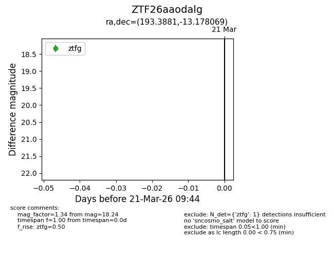
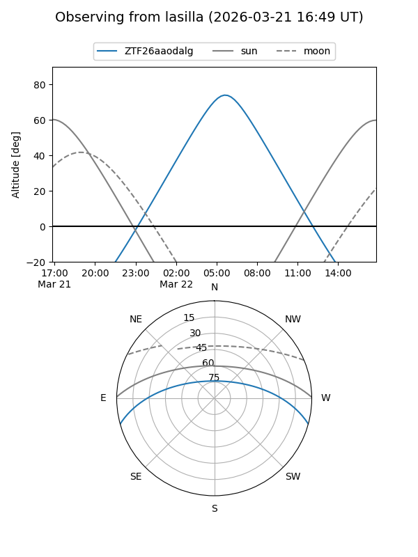
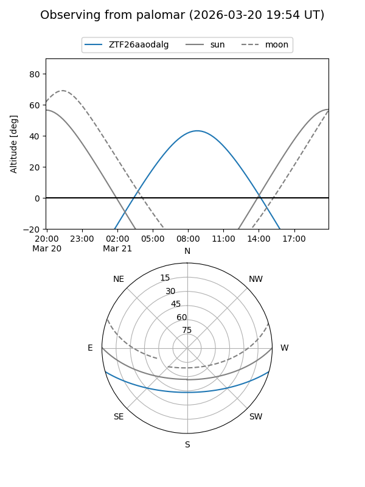

ZTF26aaodalg
Target ZTF26aaodalg at 2026-03-21 09:47
Aliases and brokers:
FINK: link
Lasair: link
ALeRCE: link
alt names
ZTF26aaodalg (ztf,fink_ztf)
Coordinates:
equatorial (ra, dec) = 193.3881,-13.17807
equatorial (HMS+DMS) = 12:53:33.15,-13:10:41.05
galactic (l, b) = (303.7276,+49.69041)
Flags:
Photometry:
last ztfg=18.24
1 ztfg detections
Lightcurve

Visibility


Additional plots